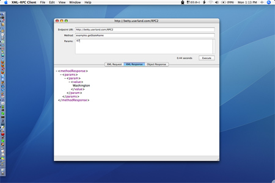
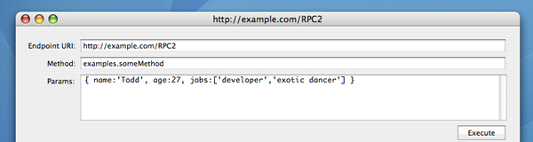

XML-RPC Client
XML-RPC Client is a free Cocoa-based developer tool for Mac OS X Tiger that allows you to access and debug XML-RPC web services from the comfort of your desktop.

Using XML-RPC Client is insanely easy.
- Type in the desired XML-RPC Endpoint URL.
- Type in the specific desired XML-RPC function to call.
- Now the interesting part... type in the params for your XML-RPC function call using JavaScript syntaxt for all of the XML-RPC datatypes (including lists and structs to an arbitrary depth).
- Click "Execute".

Upon completing the function call you will see three groups of information in the main tabbed display:
- XML Request: This is the raw XML request you have just sent to the server.
- XML Response: This is the raw XML response you have just received from the server.
- Object Response: This is a psuedo-code representation of the objects that were returned from the server.